Geografía
422 recursos de Geografía en español, sin preparación y con solucionario: fichas de lectura, búsquedas del tesoro y más, filtrables por grado.
422 recursos
Grado

«Secretos del parque nacional» – Búsqueda del tesoro de lectura

«Viajes por mares desconocidos» – Búsqueda del tesoro de lectura

Azerbaiyán – Ficha de lectura: texto con huecos, comprensión auditiva y sopa de letras

Atenas – Ficha de lectura: texto con huecos, comprensión auditiva y sopa de letras
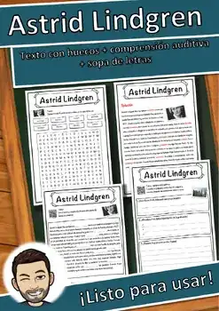
Astrid Lindgren – Ficha de lectura: texto con huecos, comprensión auditiva y sopa de letras
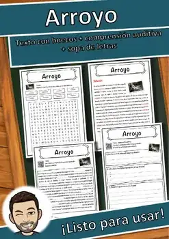
Arroyo – Ficha de lectura: texto con huecos, comprensión auditiva y sopa de letras
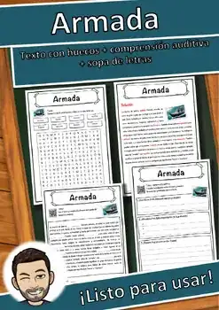
Armada – Ficha de lectura: texto con huecos, comprensión auditiva y sopa de letras
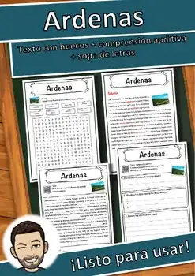
Ardenas – Ficha de lectura: texto con huecos, comprensión auditiva y sopa de letras
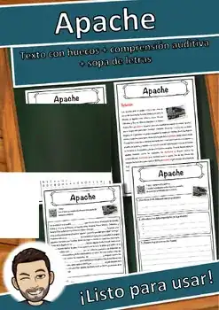
Apache – Ficha de lectura: texto con huecos, comprensión auditiva y sopa de letras
Ankara – Ficha de lectura: texto con huecos, comprensión auditiva y sopa de letras
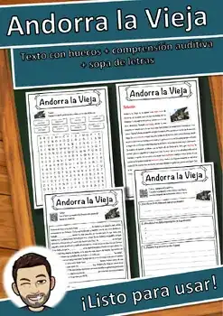
Andorra la Vieja – Ficha de lectura: texto con huecos, comprensión auditiva y sopa de letras
Andorra – Ficha de lectura: texto con huecos, comprensión auditiva y sopa de letras
Alud – Ficha de lectura: texto con huecos, comprensión auditiva y sopa de letras
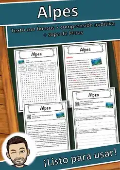
Alpes – Ficha de lectura: texto con huecos, comprensión auditiva y sopa de letras
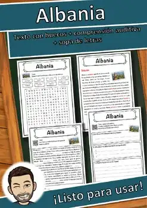
Albania – Ficha de lectura: texto con huecos, comprensión auditiva y sopa de letras
Acrópolis – Ficha de lectura: texto con huecos, comprensión auditiva y sopa de letras
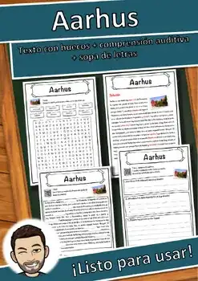
Aarhus – Ficha de lectura: texto con huecos, comprensión auditiva y sopa de letras
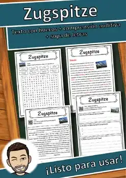
Zugspitze – Ficha de lectura: texto con huecos, comprensión auditiva y sopa de letras
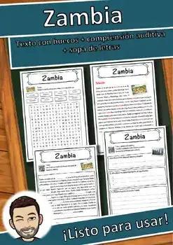
Zambia – Ficha de lectura: texto con huecos, comprensión auditiva y sopa de letras
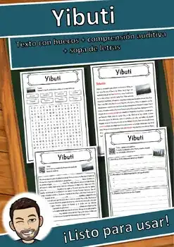
Yibuti – Ficha de lectura: texto con huecos, comprensión auditiva y sopa de letras
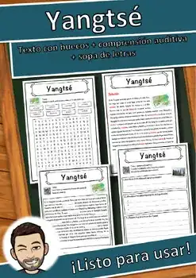
Yangtsé – Ficha de lectura: texto con huecos, comprensión auditiva y sopa de letras
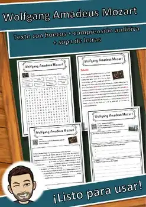
Wolfgang Amadeus Mozart – Ficha de lectura: texto con huecos, comprensión auditiva y sopa de letras
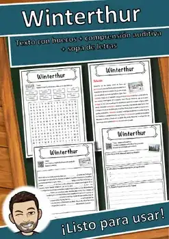
Winterthur – Ficha de lectura: texto con huecos, comprensión auditiva y sopa de letras
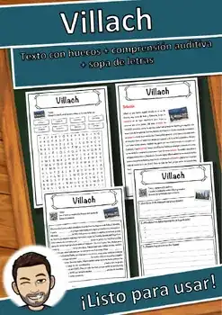
Villach – Ficha de lectura: texto con huecos, comprensión auditiva y sopa de letras
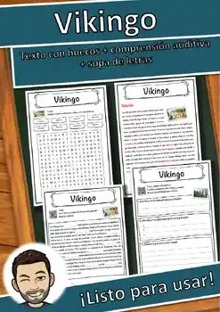
Vikingo – Ficha de lectura: texto con huecos, comprensión auditiva y sopa de letras
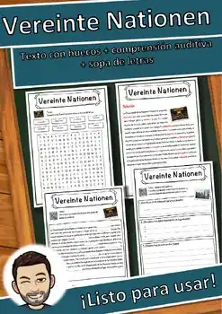
Naciones Unidas – Ficha de lectura: texto con huecos, comprensión auditiva y sopa de letras
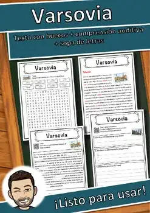
Varsovia – Ficha de lectura: texto con huecos, comprensión auditiva y sopa de letras
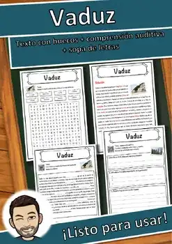
Vaduz – Ficha de lectura: texto con huecos, comprensión auditiva y sopa de letras
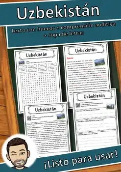
Uzbekistán – Ficha de lectura: texto con huecos, comprensión auditiva y sopa de letras
Unterwalden – Ficha de lectura: texto con huecos, comprensión auditiva y sopa de letras
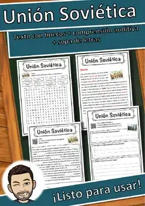
Unión Soviética – Ficha de lectura: texto con huecos, comprensión auditiva y sopa de letras
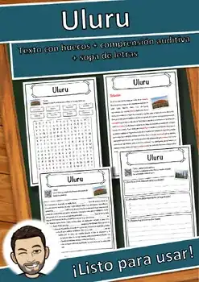
Uluru – Ficha de lectura: texto con huecos, comprensión auditiva y sopa de letras
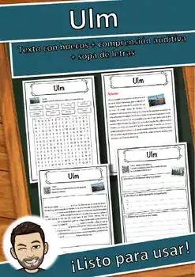
Ulm – Ficha de lectura: texto con huecos, comprensión auditiva y sopa de letras
Idioma ucraniano – Ficha de lectura: texto con huecos, comprensión auditiva y sopa de letras
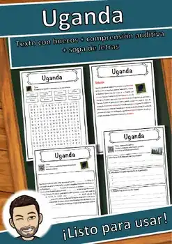
Uganda – Ficha de lectura: texto con huecos, comprensión auditiva y sopa de letras
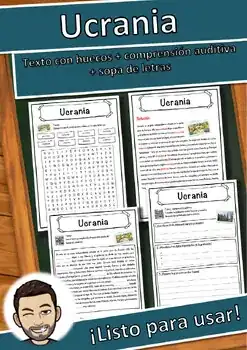
Ucrania – Ficha de lectura: texto con huecos, comprensión auditiva y sopa de letras
Túnez – Ficha de lectura: texto con huecos, comprensión auditiva y sopa de letras
Turquía – Ficha de lectura: texto con huecos, comprensión auditiva y sopa de letras
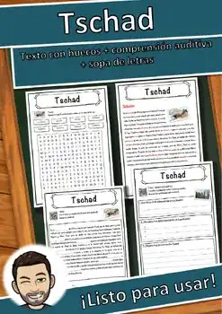
Chad – Ficha de lectura: texto con huecos, comprensión auditiva y sopa de letras
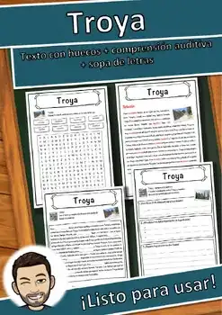
Troya – Ficha de lectura: texto con huecos, comprensión auditiva y sopa de letras
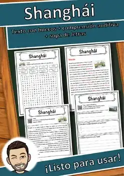
Shanghái – Ficha de lectura: texto con huecos, comprensión auditiva y sopa de letras
Trieste – Ficha de lectura: texto con huecos, comprensión auditiva y sopa de letras
Trekboer – Ficha de lectura: texto con huecos, comprensión auditiva y sopa de letras
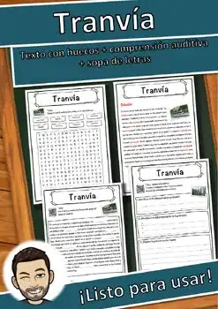
Tranvía – Ficha de lectura: texto con huecos, comprensión auditiva y sopa de letras
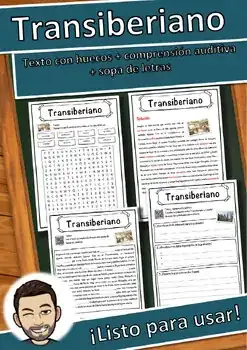
Transiberiano – Ficha de lectura: texto con huecos, comprensión auditiva y sopa de letras
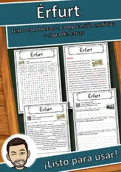
Érfurt – Ficha de lectura: texto con huecos, comprensión auditiva y sopa de letras
Toulouse – Ficha de lectura: texto con huecos, comprensión auditiva y sopa de letras
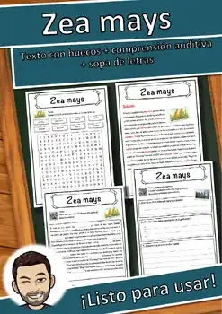
Zea mays – Ficha de lectura: texto con huecos, comprensión auditiva y sopa de letras
No se encontraron recursos. Prueba con otra palabra o con otro filtro.